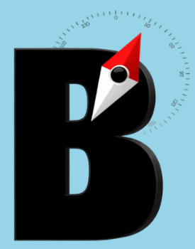
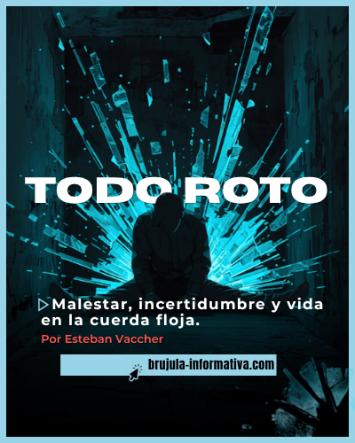
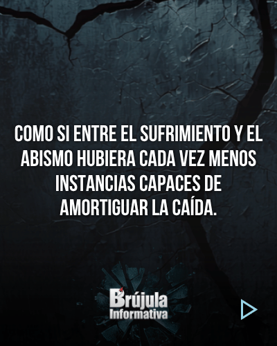
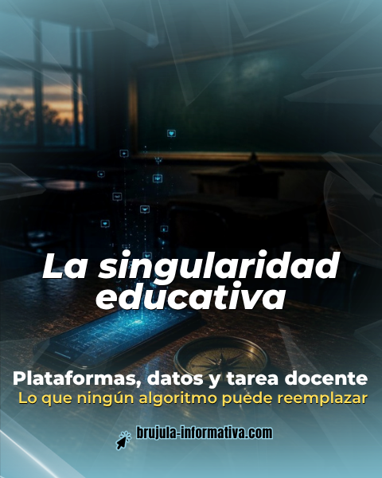
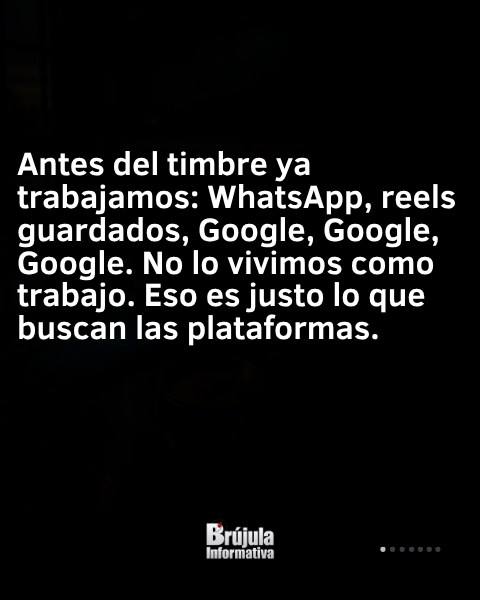
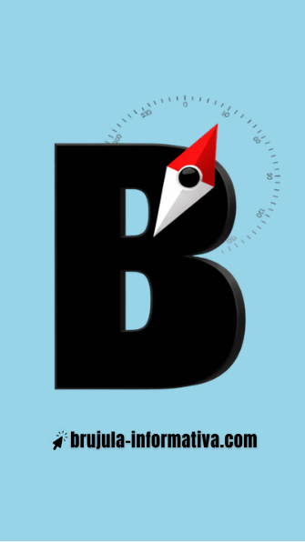

Identidad visual, usos y recursos para que cada pieza se reconozca al primer vistazo.
Este kit sistematiza lo que BRÚJULA ya viene haciendo en sus piezas y suma unos pocos recursos nuevos para darle más consistencia, legibilidad y carácter editorial. Lo nuevo aparece señalado con NUEVO
Isotipo, logotipo, área de resguardo, tamaños mínimos y usos incorrectos.
La paleta medida de las piezas publicadas, una paleta extendida, el contraste accesible y la familia tipográfica.
Recursos gráficos, retícula, estructura de carrusel, aplicaciones y checklist antes de publicar.
Los colores base se midieron píxel a píxel sobre piezas publicadas en Canva (carruseles "Todo roto", "Entrevista a Luis García", "La singularidad educativa", historia de marca). Pueden variar ±2 en cada canal por la compresión de las miniaturas. Los valores amarillo #FFDE59 y gris #3A3B3F/#BFBEBB salen directamente de los datos del diseño. Las tipografías base se identificaron visualmente: conviene confirmarlas en el panel de texto de Canva.
La B negra con volumen y la aguja de brújula roja y blanca sobre un dial graduado. Es el símbolo para avatar, historias y sellos. Va siempre sobre celeste o sobre fondo oscuro con suficiente contraste.
Palabra condensada, pesada, en blanco, con la aguja roja sobre la "ú". Va abajo y al centro en las placas internas y en el cierre de cada carrusel.
Dejá libre alrededor del logo un margen igual a x = la altura de la "B". No le pongas texto, bordes ni elementos dentro de esa zona.
Logotipo: 160 px de ancho en una placa de 1080 px. Isotipo: 96 px. Con menos tamaño, la palabra "Informativa" deja de leerse.
No deformarlo ni estirarlo.
No rotarlo.
No ponerlo sobre fondos claros: su textura oscura forma una caja.
No recolorear la aguja ni la palabra.
Mejora recomendada: hoy el logotipo es una imagen raster (1149×1368 px) con el fondo texturado incluido. Conviene vectorizarlo (SVG con fondo transparente) para usarlo sobre cualquier fondo y a cualquier tamaño.
Son los colores que ya definen a BRÚJULA. El negro y el celeste son la estructura; el rojo es la aguja y aparece poco; el amarillo y el coral marcan la firma.
El magenta #D860DC aparece en una pieza temprana ("Lago Escondido"). Se recomienda retirarlo: no dialoga con el resto de la paleta.
Cuatro colores que nacen de la paleta base. Dan profundidad a los fondos oscuros, aportan un tono editorial cálido y suman un gris legible para texto secundario.
Proporción de uso sugerida: mucho oscuro, un poco de celeste y acentos mínimos de amarillo y rojo.
Relación de contraste según WCAG 2.1. Para texto común hace falta 4,5:1 (AA) y para títulos grandes, 3:1. Calculado sobre los valores hex de este kit.
| Texto ↓ / Fondo → | Negro #0A0E10 | Tinta #0E1A22 | Pizarra #22303A | Petróleo #0F4C5C | Celeste #98D4E6 |
|---|---|---|---|---|---|
| Blanco | 19,4 ✓ | 17,7 ✓ | 13,5 ✓ | 9,5 ✓ | 1,6 ✕ |
| Papel | 16,6 ✓ | 15,1 ✓ | 11,6 ✓ | 8,2 ✓ | 1,4 ✕ |
| Celeste | 11,9 ✓ | 10,8 ✓ | 8,3 ✓ | 5,8 ✓ | — |
| Amarillo firma | 14,6 ✓ | 13,3 ✓ | 10,2 ✓ | 7,2 ✓ | 1,2 ✕ |
| Coral firma | 6,2 ✓ | 5,7 ✓ | 4,4 títulos | 3,1 títulos | 1,9 ✕ |
| Niebla | 6,8 ✓ | 6,1 ✓ | 4,7 ✓ | 3,3 títulos | 1,8 ✕ |
| Rojo aguja | 4,8 ✓ | 4,4 títulos | 3,4 títulos | 2,4 ✕ | 2,5 ✕ |
| Negro | — | 1,1 ✕ | 1,4 ✕ | 2,0 ✕ | 11,9 ✓ |
Lectura rápida: sobre celeste, el texto va siempre en negro (como en la etiqueta web). El rojo no se usa para texto chico.
TÍTULOS · PORTADAS · FIRMA
ExtraBold y Black, en recta y en itálica. La itálica Black es la voz de la portada; la firma va en SemiBold con color.
FRASES EN MAYÚSCULAS
Condensada y en mayúsculas, para las frases de las placas internas con tono de urgencia.
FRASES EN PLACAS INTERNAS
Bold. Una sans humanista muy legible para frases de dos a seis líneas.
* Identificación visual a partir de las piezas. Confirmá el nombre exacto en el panel de texto de Canva antes de fijarlo como norma. Montserrat se identifica con alta confianza.
CITAS · TEXTOS LARGOS · EPÍGRAFES
Una serif diseñada para leer noticias en pantalla. Da autoridad periodística y separa con claridad lo que dice otra persona de lo que afirma BRÚJULA. Usarla en itálica para citas y en recta para párrafos largos.
DATOS · FUENTES · FECHAS · SECCIONES
Una monoespaciada técnica para todo lo que se puede verificar: cifras, expedientes, fechas y créditos. Que lo documental tenga una letra propia refuerza el rigor del medio.
Una franja celeste con el cursor y la URL en negro. Va al pie de portadas y cierres.
Una línea blanca en ExtraBold y debajo la autoría en amarillo o coral, alineadas a la derecha.
Un filete celeste en el borde derecho; una flecha ▷ que invita a deslizar; puntos que marcan la posición en el carrusel.
La foto oscurecida hacia abajo, con un velo celeste al pie: así el título siempre se lee.
Una foto temática casi invisible (3 a 13 % de opacidad) detrás del texto de las placas internas.
La aguja del isotipo, aislada, funciona como viñeta o señal. Junto a una volanta en Plex Mono celeste indica la sección o el formato.
Fondo Petróleo, filete amarillo, texto en Newsreader itálica Papel y crédito en Plex Mono. Deja en claro de quién son las palabras.
Un número grande y, siempre, su fuente debajo. Ningún dato sale sin respaldo visible: es la marca del rigor de BRÚJULA.
Un fondo alternativo para placas internas sin foto. Es más profundo que el negro plano y sigue siendo oscuro.
Márgenes: 40 px a los costados (más el filete celeste de 22 px a la derecha), y 60 px arriba y abajo.
Frase: en el tercio medio, alineada a la izquierda, de 2 a 6 líneas como máximo.
Pie: logo centrado y paginación a la derecha.
Foto con degradé, título en itálica Black, firma y etiqueta web.
Una escena o pregunta que interpela.
Frase, cita o ficha de dato. Siempre con fuente.
Una frase-fuerza con estilo de portada y la etiqueta web.

Portada · "Todo roto"

Interna · Bebas

Portada · "La singularidad educativa"

Interna · Fira Sans

Historia · isotipo